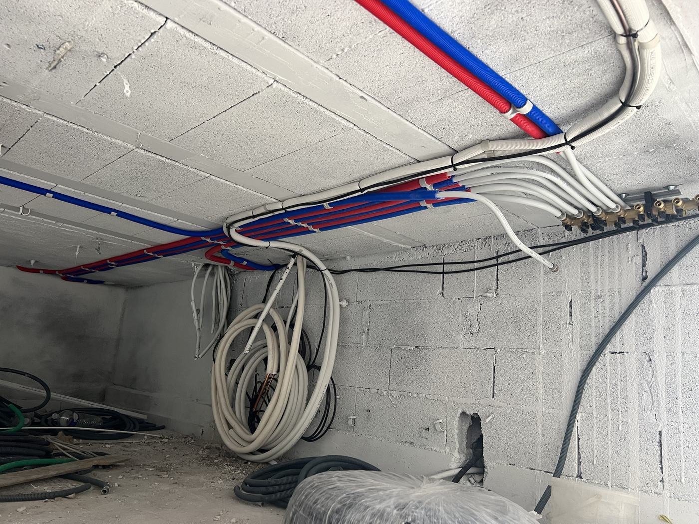

Fuites
Recherche et réparation de fuite, raccords, joints.
Accueil / Plomberie
Dépannage, recherche de fuite, robinetterie et sanitaires, réalisés avec le même soin que la climatisation.
Recherche et réparation de fuite, raccords, joints.
Remplacement de mitigeurs, robinets, mécanismes de chasse d'eau.
Pose de WC, lavabo, évier, meuble de salle de bain.
Remplacement et raccordement de chauffe-eau électrique.

Eau froide en bleu, eau chaude en rouge, chaque départ sur son propre robinet au collecteur : en cas de fuite, on coupe une seule pièce, pas toute la maison.
Appelez directement, c'est le plus rapide. Sinon, le devis en ligne prend deux minutes.